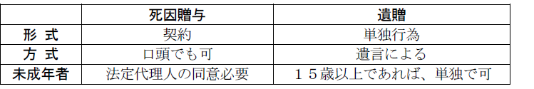
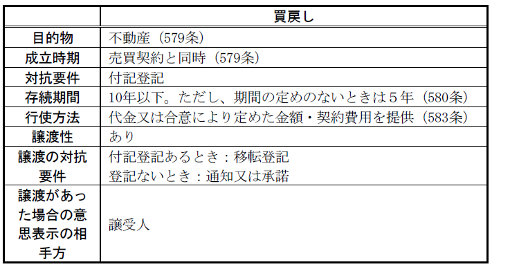

第６編 契約各論
第１章 贈与
：当事者の一方がある財産を無償で相手方に与える契約
無償・片務・諾成契約である。他人物贈与でも有効に成立する。
1. 贈与者の財産移転義務（549条）
特定物の贈与では、債務者の注意義務を軽減する旨の規定はないので、「善良な管理者の注意」（400条）をもって目的物を保管しなければならない。
2. 書面によらない贈与の解除（550条）
(1) 趣旨
550条が書面によらない贈与の解除を認めた趣旨は、①贈与者の意思が確定していることを確かめて、後に争いの生ずることを防ぎ（意思の明確化）、また、②軽率に贈与のなされることを防ぐため（軽率な贈与の予防）と考えられている。
すなわち、書面によらない贈与は解除することができると規定することによって、事実上、贈与は「書面」によることを要求しているということができる。
(2) 「書面」による贈与
「書面」とは、贈与意思の明確化（①）という書面によらない贈与の解除が認められた趣旨から、贈与の事実が確実にみてとれる程度の記載があればよい。
贈与者の権利移転の意思が書面に表示されていればよいと、ごく緩やかに解されている。ただ、贈与者がたまたま自分の日記の中に当該贈与契約を締結した事実を記載していても、書面による贈与に当たらず、贈与者は本条による解除をすることができる。
ⅰ 贈与契約を書面にしたものである必要はなく、例えば書面上は売渡証書であっても、自己の財産を相手方に取得させる意思が表示されており他の証拠から無償行為であることが証明されればよい（大判大３.12.25）。
ⅱ 贈与契約を書面にしたものについて、受贈者の承諾の意思が書面に表示されていなくてもよい（大判明40.５.６）。また、契約の成立後に書面が作成されてもよい（大判大５.９.22）。
ⅲ 贈与者の慎重な意思決定に基づいて作成され、かつ、贈与の意思を確実に看取し得る限り、贈与者の第三者宛の内容証明郵便でもよい（最判昭60.11.29）。
(3) 「履行の終わった」の意味
書面によらない贈与の解除を認めた①の趣旨から、贈与の意思を明確に表す程度の徴表でよい。
(a) 贈与の目的物が動産の場合－引渡しの終了のとき
(b) 贈与の目的物が不動産の場合－登記又は引渡しのいずれかがあったとき
(4) 解除
本条の解除は、不完全な贈与の履行を拒む趣旨であるから、消滅時効にかからない（大判大８.６.３）。
3. 贈与者の引渡義務等（551条）
(1) 通常の贈与
贈与者は、贈与の目的物を贈与の目的として特定した時の状態で引き渡し、又は移転することを約したものと推定される（551条１項）。
贈与者は贈与契約の内容に適合した目的物を引き渡す義務を負うことを前提にした上で、無償契約である贈与における贈与者の責任を軽減する観点から設けられた規定である。同規定は当事者の意思を推定する規定であるから、当事者間でこれと異なる合意がされた場合はそれに従うこととなる。
(2) 負担付贈与
負担付贈与では受贈者が負担を負うが、これは本来贈与者の給付と対価関係にあるわけではない。しかし、実質的には負担の範囲内では両者が対価関係にあるといえるので、贈与者は負担の限度で売主と同様の担保責任を負う（551条２項）。「負担の限度で責任を負う」とは、受贈者が負担の履行によって損失を被らないようにするという意味とされる。
1. 負担付贈与：受贈者も贈与者に対して一定の給付を負担する贈与契約（553条）
本来、受贈者が負う負担は贈与者の給付と対価関係に立つわけではないが、実質上、負担の範囲内で対価関係にあるといえることから、双務契約に関する規定（ex．同時履行の抗弁権（533条）、危険負担（536条）、解除（541条～548条））が準用される。
2. 定期贈与（552条）：継続的に一定の財産を与える契約
ex．ある者の在学中に他の者が一定額の学費・生活費を与えるという契約
定期贈与は当事者間の人的関係に基づくことが多いから、反対の意思表示のない限り、贈与者又は受贈者の死亡によってその効力を失う（552条）。
3. 死因贈与：贈与者の死亡を停止条件とする贈与（554条）
死因贈与と遺贈とは、いずれも贈与者の死亡によって効力を生じる点で類似するものであり、遺贈の規定が準用される。
ただ、死因贈与は契約であるが、遺贈は単独行為である。この相違から、いかなる規定までが準用されるのかが問題となってくる。
(1) 遺贈の効力に関する規定
死因贈与は契約であることから、遺贈の承認･放棄についての規定は準用されないが、これを除き、遺贈の効力に関する規定（985条以下）の準用が認められる。
(2) 遺贈の方式に関する規定
遺贈は単独行為であり、また、本人の死亡後に問題となるので、本人の意思の明確化が必要となり、また、偽造等の回避が問題となる。これに対して、死因贈与はあくまで契約であり、諸般の事情からいかなる契約がなされたかを認定することは可能である。そのため、方式についての規定は準用されず、たとえ口頭であってもよいとされる（最判昭32.５.21）。

(3) 遺贈の撤回に関する判例
＜判例＞ 最判昭57.４.30
「負担の履行期が贈与者の生前と定められた負担付死因贈与契約に基づいて受贈者が約旨に従い負担の全部又はそれに類する程度の履行をした場合においては、贈与者の最終意思を尊重する余り受贈者の利益を犠牲にすることは相当でないから、右贈与契約締結の動機、負担の価値と贈与財産の価値との相関関係、右契約上の利害関係者間の身分関係その他の生活関係等に照らし右負担の履行状況にもかかわらず負担付死因贈与契約の全部又は一部の取消をすることがやむをえないと認められる特段の事情がない限り、遺言の取消に関する民法1022条、1023条の各規定を準用するのは相当でないと解すべきである。」
＜判例＞ 最判昭58.１.24
「死因贈与が自由に取り消すことができないものであるからといつて、このことから直ちに、贈与者は死因贈与の目的たる不動産を第三者に売り渡すことができないとか、又はこれを売り渡しても当然に無効であるとはいえない…（受贈者と買主との関係はいわゆる二重譲渡の場合における対抗問題によつて解決されることになる）。」
第２章 売買
第１節 売買の成立
：当事者の一方がある財産権を相手方に移転することを約し、相手方がこれにその代金を支払うことを約束することによって効力を生ずる契約
有償・双務・諾成契約である（555条）。
売買に関する民法の規定は、売買以外の有償契約について準用する。ただし、その有償契約の性質がこれを許さないときは、この限りでない（559条）。
1. 意義
手付とは、契約締結の際に当事者の一方から相手方に交付される金銭その他の有価物をいう。
手付契約は、売買契約に従たる要物契約である。
2. 手付の目的・種類
(1) 種類
手付には、①証約手付、②解約手付、③違約手付があるが、試験対策としては解約手付を学習すればよい。
(2) 解約手付
解約手付とは、両当事者が相手方の債務不履行がなくても契約を解除できるという解除権を留保する趣旨で交付される手付をいう。
解約手付の趣旨で手付が交付された場合には、交付した者（買主）が手付を放棄するか、交付を受けた者（売主）が手付金額の倍額を買主に返還すれば、債務不履行の事実がなくても契約を解除できる。
当事者間で授受された手付は、反対の証拠のない限り解約手付とされる（最判昭29.１.21）。
3. 解約手付による解除の要件
解約手付が交付された場合には、その相手方が契約の履行に着手するまでは契約を解除することができる（557条１項ただし書）。
(1) 相手方が契約の履行に着手する前であること
(a) 履行の着手の意義
客観的に外部から認識し得るような形で履行行為の一部をなし又は履行の提供をするために欠くことのできない前提行為をした場合を指す（最大判昭40.11.24）。一般的には、履行の着手に当たるか否かは、「当該行為の態様、債務の内容、履行期が定められた趣旨・目的等諸般の事情を総合勘案して決すべきである」（最判平５.３.16）。
(b) 具体例
ⅰ 売主については、契約の趣旨に従って、目的物の修理、調達、荷造りなどをした場合
不動産売買の買主の場合、支払代金を調達しただけでは足りない。
ⅱ 買主が、履行期到来後売主に対して頻繁に明渡しを求め、この際、明渡しがあればいつでも残代金の支払をすることができる準備がある場合
ⅲ 履行期日前、買主が、残代金と引換えに引渡しを求めた場合
ⅳ 借家人のいる家屋につき売主がしばしば借家人に対して明渡しを求めていた場合
ⅴ 転売契約において売主が前主に代金を支払い、売主名義に移転登記を得ていた場合
※ 履行期が定められていても、それ以前に、本条１項の履行の着手をすることができないわけではない (最判昭41.１.21)。例えば、履行期を５月１日とする売買契約で解約手付が授受されている場合、買主が４月30日に代金を提供したときには ｢契約の履行に着手｣ したと認められる。
(2) 手付の放棄・倍戻しをすること
手付の倍額の償還による売買契約の解除をするためには、単に口頭により手付の倍額を償還する旨を告げその受領を催告するのみでは足りず、買主に現実の提供をすることを要する（557条1項本文。最判平６.３.22）。
4. 解約手付による解除の効果
(1) 損害賠償請求権の有無
解除の結果、損害賠償請求権は発生しない（557条２項）。
ただし、債務不履行を理由として解除する場合には、解約手付とは無関係であり、545条その他法定解除の規定に従う。従って、その解約手付が違約手付を兼ねているのでない限り、買主は不当利得としてその返還を請求できる。
(2) 契約が合意解除された場合、特約その他の事由のない限り手付金は不当利得として返還されなければならない。
(3) 契約が履行されたときは、手付金は代金の一部にあてられる。
売買契約に関する費用は、当事者双方が等しい割合で負担する（558条）。
売買では当事者双方が平等に利益を受けることから、このように規定されている。
第２節 売買の効力
Ⅰ 売主の義務
1. 財産権移転義務等
売買契約が成立すると、売主は売買の目的である財産権を買主に完全に移転する義務を負う（555 条）。
具体的には、①目的たる財産権の移転、②目的物の占有の移転、③対抗要件を具備させること、④証書の交付等をする必要がある。
2. 他人物売買
(1) 他人物売買の有効性
他人の物を売買契約の目的としても売買契約自体は有効である。売主は、その物を他人から取得して買主に移転する義務がある（561条）。
(2) 他人物売買の所有権移転時期
売主が他人所有の特定物を売り渡し、その後その物件の所有権を取得した場合には、買主への物件の所有権および占有移転の時期、方法につき特段の約定ないし意思表示がない限り、売主がその物件の所有権を取得すると同時に買主はその物件の所有権を取得する（最判昭40.11.19）。
1. 意義
売買の目的物引渡前は、売主に果実収取権があり(575条１項) 、目的物引渡後は、買主に果実収取権がある。「目的物の引渡」が基準である。
契約成立時に目的物の所有権は買主に移転し、果実は買主の物となるため、権利の移転後も売主が目的物を占有している間に果実が生じた場合には、本来は、売主はそれを買主に引き渡すべきである。
所有権移転後、売主が管理費用を支出した場合には、売主は買主に当該管理費用を請求することができる。また、履行期以後に発生する売買代金の利息を請求することもできる。
買主から請求できる→果実収取の利益
売主から請求できる→管理費用及び利息
民法575条は、買主の果実収取の利益と売主の管理費用及び利息の請求額を等しいと考え、両当事者の複雑な関係を簡潔に解決しようとするものである。
2. 売主が売買の目的物の引渡しを遅滞している場合
売主は、売買の目的物の引渡しを遅滞しているときでも、代金の支払を受けない限り、引渡しの時まで果実を収取できる (大連判大13.９.24)。
しかし、買主が代金を支払ったときには、目的物引渡前でも売主は果実を取得する権利を失う（大判昭７.３.３)。
Ⅱ 買主の義務
1. 代金の支払期限（573条）
双務契約である売買においては、目的物の引渡しと代金の支払は同時履行の関係に立つから、売買の目的物の引渡しについてのみ期限があるときは、公平の観点から、買主の代金の支払についても同一の期限の定めを付したものと推定される（573条）。
2. 代金の支払場所（574条）
当事者の意思を推測し、売買の目的物の引渡しと同時に代金を支払うべきときは、その引渡しの場所において支払わなければならない（574条）。
3. 代金支払拒絶権（576条～578条）
(1) 目的につき他人が権利を主張する場合（576条）
売買の目的について権利を主張する者があることその他の事由により、買主が買い受けた権利の全部若しくは一部を取得することができず、又は失うおそれがあるときは、両当事者の公平の見地から買主に代金支払の拒絶権を認め、その損害を未然に防止できるようにしたものである。
576条は、代金支払の拒絶ができる場合として売買の目的について権利を主張する者がある場合以外に「その他の事由」を追加するとともに、買い受けた権利を取得することができない場合にも代金支払拒絶を認めている。
(2) 目的物に担保物権がある場合（577条）
買い受けた不動産上に契約の内容に適合しない抵当権等（抵当権、質権、先取特権）が存在する場合には、買主は抵当権消滅請求をすることができるが（379条以下）、そのために担保権者に支払った費用は売主の債務の弁済であるから、売主から償還してもらえるものである。そこで、当事者の便宜と公平の見地から、買主が抵当権消滅請求をする場合にはその手続が終了するまで代金支払拒絶権を認め、代金額から費用を差し引いた額を支払わせるとするものである。
(3) 売主の供託請求権（578条）
576条及び577条によって買主に代金支払拒絶権が認められる場合には、売主は買主に対して代金の供託を請求することができる（578条）。従って、売主が代金の供託を請求したにもかかわらず、買主が代金を供託しないときは、買主は上記の代金支払拒絶権を行使することができない（大判昭14.４.15）。
買主は、目的物の引渡しの日から、代金の利息を支払う義務を負う（575条２項本文）。本条項の趣旨は、１項で売主に目的物の引渡しまでは目的物の果実を取得できるとしたこととの均衡上、買主にたとえ遅滞があっても目的物の引渡しを受ける以前には、代金の利息の支払義務を負わないとしたところにある（大連判大13.９.24）。
なお、代金の支払について期限があるときは、その期限が到来するまでは、利息を支払うことを要しない（575条２項ただし書）。
＜判例＞ 最判昭46.12.16
売買契約において、売主が買主に対し、契約の存続期間を通じて採掘する鉱石の全量を売り渡す約定があったなどの事情がある場合には、信義則上、買主には売主が上記期間内に採掘した鉱石を引き取る義務があると解すべきである。
第３節 買戻し
買戻しとは、不動産の売買契約において、その売買契約と同時に特約を付すことで、一定の要件のもとに売主に当該不動産を取り戻すことを認める制度をいう
売主が契約を解除して目的物を取り戻せる権利を買戻権といい、形式的には約定解除権であるが、その実質は物権取得権である。
1. 不動産売買であること
民法上の「買戻し」は不動産に限られる。動産の買戻しも契約自由の原則から有効であるが、民法にいう「買戻し」ではない。
2. 買戻しの特約が売買契約と同時になされること
買戻しの特約は、売買契約と同時にその登記をしなければ第三者に対して対抗力が認められない（581条１項）。後に買戻しの特約をしても無効で、誤ってその登記がなされても抹消しなければならない。
3. 買戻代金について定めること
支払代金及び契約費用が買戻代金となるのが原則であるが、当事者が別段の合意をした場合には、その合意により定めた金額及び契約費用が買戻代金となる（579条前段括弧書）。
なお、当事者が別段の意思を表示しないときは不動産の果実と代金の利息とは相殺したものとみなされる（579条後段）。
4. 買戻しの期間
買戻しの期間は10年を超えることができない。特約でこれより長い期間を定めたときは、10年とする（580条１項）。また、買戻しについて期間を定めたときは、その後にこれを伸長できない（580条２項）。
なお、期間の定めがないときは５年以内に買戻権を行使しなければならない（580条３項）。
1. 買戻権の性質
買戻権は、形式的には約定解除権であるが、実質は金を借りた債務者がこれを返済して担保物を取り戻すことができる地位である。
2. 買戻権の譲渡
買戻権は譲渡できる。対抗要件は登記であり、債権譲渡の対抗要件である通知・承諾（467条）を要しない（大判昭８.９.12）。ただし、買戻権が登記されていないときは、通知・承諾による（最判昭35.４.26）。
3. 買戻権の行使
(1) 行使の方法
相手方に対する意思表示によってなされる（540条１項）。不動産の買主が死亡した場合、共同相続人の全員に対して買戻しの意思表示をしなければならない（544条１項）。
(2) 行使の相手方
行使の相手方は買主であり、目的物が第三者に譲渡されたときは転得者である（最判昭36.５.30）。
(3) 代金及び契約の費用の提供
売買代金又は合意により定めた金額と契約の費用を提供しなければ、買戻しをすることはできない（583条１項）。
(4) 買戻しの効果
買戻権の行使によって目的不動産の所有権は売主に復帰する。
1. 共有者の１人が買戻特約付きでその持分を売却した後に、当該不動産に分割又は競売があったときは、売主は買主が受け、若しくは受けるべき部分又は代金について買戻しをすることができる（584条本文）。ただし、売主に通知をしないでした分割及び競売は、売主に対抗することができない（584条ただし書）。
2. 共有者の１人が買戻特約付きでその持分を売却した後に、当該不動産の競売があり、買主が買受人となったときは、売主は競売の代金及び583条に掲げた費用を支払って不動産の全部の買戻しをすることもできるし（585条１項）、売却した持分のみの買戻しをすることもできる。
しかし、買主以外の共有者の分割請求によって買主が競売の買受人となったときは、売主はその持分のみについて買戻しをすることはできない（585条２項）。
買戻権は、買戻期間の経過・目的物の滅失によって消滅する。また、当事者の合意によって消滅させることができる。
【買戻し まとめ】
